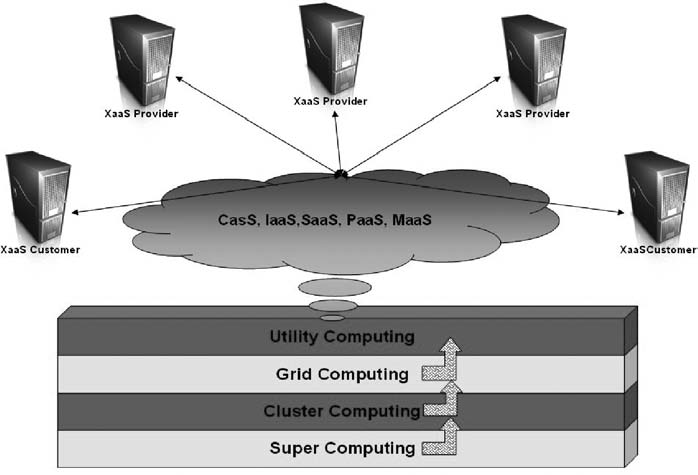
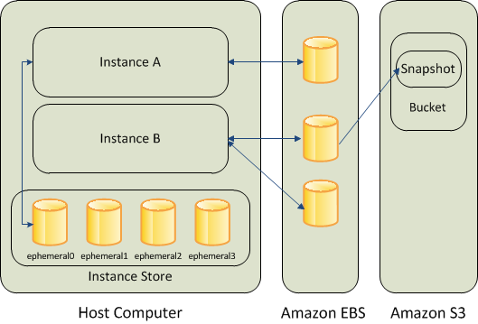

AMAZONLink

Amazon play a major role in IAAS environment.
On-demand computing is an increasingly popular enterprise model in which computing resources are made available to the user as needed. Computing resources that are maintained on a user’s site are becoming fewer and fewer, while those made available by a service provider are on the rise. The on-demand model evolved to overcome the challenge of being able to meet fluctuating resource demands efficiently. Because demand for computing resources can vary drastically from one time to another, main- taining sufficient resources to meet peak requirements can be costly. Over-engineering a solution can be just as adverse as a situation where the enterprise cuts costs by maintaining only minimal computing resources, resulting in insufficient resources to meet peak load requirements. Concepts such as clustered computing, grid computing, utility computing, etc., may all seem very similar to the concept of on-demand computing, but they can be better understood if one thinks of them as building blocks that evolved over time and with techno-evolution to achieve the modern cloud computing model we think of and use today.
One example we will examine is Amazon’s Elastic Compute Cloud (Amazon EC2). This is a web service that provides resizable computing capacity in the cloud. It is designed to make web-scale computing easier for developers and offers many advantages to customers: - It’s web service interface allows customers to obtain and configure capacity with minimal effort. - It provides users with complete control of their (leased) computing resources and lets them run on a proven computing environment. - It reduces the time required to obtain and boot new server instances to minutes, allowing customers to quickly scale capacity as their computing demands dictate. - It changes the economics of computing by allowing clients to pay only for capacity they actually use. - It provides developers the tools needed to build failure-resilient applications and isolate themselves from common failure scenarios.
Amazon Web ServicesLink
- Amazon Web Services. A number of significant AWS competitors exist who have different takes on the IaaS problem. These different approaches have key value propositions for different kinds of cloud customers.
- AWS is based on pure virtualization. Amazon owns all the hardware and controls the network infrastructure, and you own everything from the guest operating system up.
- You request virtual instances on-demand and let them go when you are done. Amazon sees one of its key benefits is a commitment to not over committing resources to virtualization.
- AppNexus represents a different approach to this problem. As with AWS, AppNexus enables you to gain access to servers on demand. AppNexus, however, provides dedicated servers with virtualization on top. The confidence in knowing that your applications are not fighting with anyone else for resources and that you can meet any requirements that demand full control over all physical server resources.
- Hybrid computing takes advantage of both worlds, offering virtualization where appropriate and dedicated hardware where appropriate. In addition, most hybrid vendors such as Rackspace and GoGrid base their model on the idea that people still want a traditional data center—they just want it in the cloud.
- There are a number of reasons why a purely virtualization solution might not work for you:
- Regulatory requirements that demand certain functions operate on dedicated hardware
- Performance requirements—particularly in the area of I/O—that will not support portions of your application
- Integration points with legacy systems that may lack any kind of web integration strategy. A cloud approach tied more closely to physical hardware may meet your needs in such cases
- There is Microsoft Azure. Microsoft Azure represents all aspects of cloud computing, from private clouds up to PaaS. You write your applications using Microsoft technologies and can deploy them initially in a private cloud and later migrate them to a public cloud.
- Like Google App Engine, you write applications to a proprietary application development framework. In the case of Azure, however, the framework is based on the more ubiquitous .NET platform and is thus more easily portable across Microsoft environments.
Overview of of Amazon Web ServicesLink
There apply cloud environment by using following principles. In reality, however, most of are likely implementing in the AWS environment.
Ignoring that fact is just plain foolish; therefore, using that AWS environment for the examples used throughout.
AWS is Amazon’s umbrella description of all of their web-based technology services. It encompasses a wide variety of services, all of which fall into the concept of cloud computing.
There are technologies that fit into their Infrastructure Services:
- Amazon Elastic Cloud Compute (Amazon EC2)
- Amazon Simple Storage Service (Amazon S3)
- Amazon Simple Queue Service (Amazon SQS)
- Amazon CloudFront
- Amazon SimpleDB
Two of these technologies—Amazon EC2 and Amazon S3—are particularly interesting in the context of transactional systems.
There message queues are critical in grid computing and are also useful in many kinds of transactional systems. Given that the heart of a transactional system is a database, think Amazon SimpleDB would be a critical piece for a transactional application in the Amazon cloud.
In reality, however, Amazon SimpleDB is—as its name implies—simple. Therefore, it’s not well suited to large-scale web applications. Furthermore, it is a proprietary database system, so an application too tightly coupled to Amazon SimpleDB is stuck in the Amazon cloud.
Infrastructure as A Services (IAAS) Amazon EC2Link
Amazon Elastic Compute Cloud (Amazon EC2) is an Amazon Web Service (AWS) you can use to access servers, software, and storage resources across the Internet in a self-service manner
- Provides scalable, pay as-you-go compute capacity
-
Elastic - scales in both direction
-
StorageLink
- Amazon EC2 provides three type of storage option
- Amazon EBS
- Amazon S3
- Instance Storage

Networking and SecurityLink
Amazon EC2 Key PairsLink
Amazon EC2 uses public–key cryptography to encrypt and decrypt login information. Public–key cryptography uses a public key to encrypt a piece of data, such as a password, then the recipient uses the private key to decrypt the data. The public and private keys are known as a key pair.
To log in to your instance, you must create a key pair, specify the name of the key pair when you launch the instance, and provide the private key when you connect to the instance. On a Linux instance, the public key content is placed in an entry within ~/.ssh/authorized_keys. This is done at boot time and enables you to securely access your instance using the private key instead of a password.
Amazon EC2 Security Groups for Linux InstancesLink
A security group acts as a virtual firewall that controls the traffic for one or more instances. When you launch an instance, you can specify one or more security groups; otherwise, we use the default security group. You can add rules to each security group that allow traffic to or from its associated instances. You can modify the rules for a security group at any time; the new rules are automatically applied to all instances that are associated with the security group. When we decide whether to allow traffic to reach an instance, we evaluate all the rules from all the security groups that are associated with the instance.
Controlling Access to Amazon EC2 ResourcesLink
Your security credentials identify you to services in AWS and grant you unlimited use of your AWS resources, such as your Amazon EC2 resources. You can use features of Amazon EC2 and AWS Identity and Access Management (IAM) to allow other users, services, and applications to use your Amazon EC2 resources without sharing your security credentials. You can use IAM to control how other users use resources in your AWS account, and you can use security groups to control access to your Amazon EC2 instances. You can choose to allow full use or limited use of your Amazon EC2 resources.
Amazon EC2 Instance IP AddressingLink
Amazon EC2 and Amazon VPC support both the IPv4 and IPv6 addressing protocols. By default, Amazon EC2 and Amazon VPC use the IPv4 addressing protocol; you can't disable this behavior. When you create a VPC, you must specify an IPv4 CIDR block (a range of private IPv4 addresses). You can optionally assign an IPv6 CIDR block to your VPC and subnets, and assign IPv6 addresses from that block to instances in your subnet. IPv6 addresses are reachable over the Internet.
Elastic IP AddressesLink
An Elastic IP address is a static IPv4 address designed for dynamic cloud computing. An Elastic IP address is associated with your AWS account. With an Elastic IP address, you can mask the failure of an instance or software by rapidly remapping the address to another instance in your account.
An Elastic IP address is a public IPv4 address, which is reachable from the internet. If your instance does not have a public IPv4 address, you can associate an Elastic IP address with your instance to enable communication with the internet; for example, to connect to your instance from your local computer.
Enhanced Networking on LinuxLink
Enhanced networking uses single root I/O virtualization (SR-IOV) to provide high-performance networking capabilities on supported instance types. SR-IOV is a method of device virtualization that provides higher I/O performance and lower CPU utilization when compared to traditional virtualized network interfaces. Enhanced networking provides higher bandwidth, higher packet per second (PPS) performance, and consistently lower inter-instance latencies. There is no additional charge for using enhanced networking.
Placement GroupsLink
You can launch or start instances in a placement group, which determines how instances are placed on underlying hardware. When you create a placement group, you specify one of the following strategies for the group:
- Cluster – clusters instances into a low-latency group in a single Availability Zone
- Partition – spreads instances across logical partitions, ensuring that instances in one partition do not share underlying hardware with instances in other partitions
-
Spread – spreads instances across underlying hardware
-
Instances can be launched on one of the two platforms
- EC2-Classic
- EC2-VPC
- Instance IP address is dynamic.
- new IP address is assigned every time instance is launched
- Static IP address – Elastic IP address
- Remap the Elastic IP to new instance to mask failure
- Separate pool for EC2-Classic and VPC
- Security Groups to access control to instance
Monitoring, Auto Scaling, and Load BalancingLink
•Monitor statistics of instances and EBS
–CloudWatch
•Automatically scales amazon EC2 capacity up and down based on rules
–Add and remove compute resource based on demand
–Suitable for businesses experiencing variability in usage
•Distribute incoming traffic across multiple instances
–Elastic Load Balancing
ReferencesLink
- (Theory in Practice O'Reilly) George Reese-Cloud Application Architectures_ Building Applications and Infrastructure in the Cloud (Theory in Practice (O'Reilly))-O'Reilly Media (2009) AMAZON EC2
- Borko Furht (auth.), Borko Furht, Armando Escalante (eds.)-Handbook of cloud computing-Springer US (2010), Cloud Computing Services Part III
- http://docs.aws.amazon.com
- Above the Clouds: A Berkeley View of Cloud Computing - Michael Armbrust et.al 2009
- International telecommunication union – Focus Group Cloud Technical Report
- Wikipedia
- aws.amazon.com/big-data
- aws.amazon.com/compliance
- aws.amazon.com/datasets
- aws.amazon.com/grants
- aws.amazon.com/genomics
- aws.amazon.com/hpc
- aws.amazon.com/security